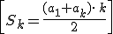
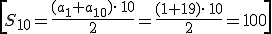

Si sumamos los k primeros términos de una progresión aritmética, podemos comprobar que la suma del primero más el último da el mismo resultado que la del segundo más el penúltimo. De esa manera se obtiene la fórmula:

Por ejemplo. La suma de los primeros diez términos de la progresión: 1, 3, 5, 7, .. an= 2n – 1, is:

Ejercicios
1.- Calcula la suma de los diez primeros términos de estas progresiones artiméticas:
a) 1, -1, -3, -5,...
b) an = 3n - 1
c) a1 = 15, a7 = 27
2.- Si la suma 1 + 2 + 3 + 4 +... + n da 60378. ¿Cuántos números hemos sumado?
3.- Calcula la distancia que un jardinero recorre cuando vierte un cubo de agua de un pozo en cada uno de los 30 árboles alineados en una fila, sabiendo que la distancia desde el pozo hasta el primer árbol es de 10 m y la distancia entre un árbol y el siguiente es de 6 m, y teniendo en cuenta que tiene que colocar el cubo de nuevo junto al pozo cuando termine.
Soluciones: 1) a) -80; b) 165; c) 240; 2) n = 347: 3) 5820 m